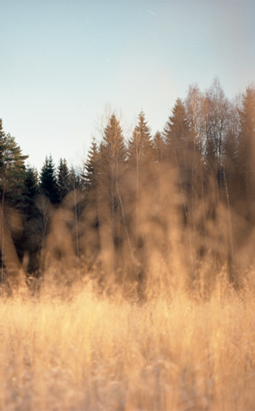
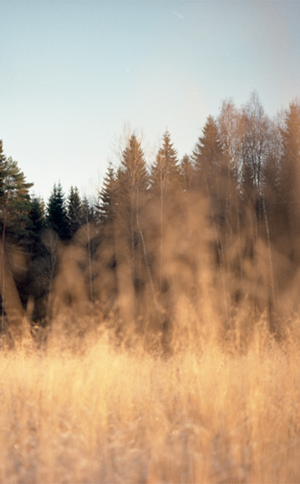

YOU CAN BE THE HERO
Every hero needs a sidekick. Let us help you help us! For every 1000 #growit bags planted and tagged we donate 10.000 pounds to our sustainable research. We have a vision. In 2030 we want our brand to be completely circular. In order to do that, we need to figure out how to make 100% of clothing waste in to new collections. We need to come up with new sustainable binding agents and rethink the use of fibres and textiles. We make it. You wear it. Let’s change it together.